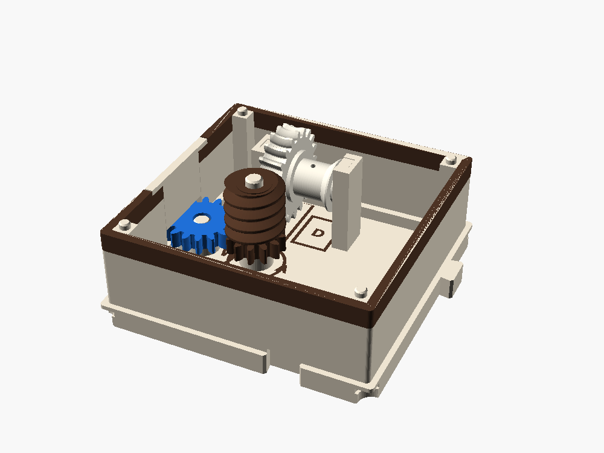

HOIST ÷20
Crank the line and a bucket climbs a mast on the lid. Let go and it stays up, with nothing to release. A worm can turn its wheel, but the wheel can't turn the worm. That one fact is the whole lesson, and it comes with a price.
1 cell · W in (16 teeth) · end box · ÷20 in one mesh · 2.0 mm of lift a port turn · cost 9

A worm is a ramp wrapped round a shaft
We tried a worm in the MOTOR box and traded it for a bevel pair, because a worm wastes most of the torque it passes. That was the right call for a drive. HOIST is the box where a worm is the right part, because here we want what that friction buys. A worm gives three things no other gear in the system gives in one mesh:
A big ratio
One turn of a single-start worm moves the wheel one tooth. With 20 teeth that is 20:1 in one mesh. Spur gears need three meshes to get there.
It holds
When the thread is shallower than the friction can slide on, nothing on the wheel's side can turn the worm. The load stays where you left it.
A right angle
The two shafts cross at 90° without meeting. Here the worm stands up on a normal stack, and the wheel and drum turn on a level axle.
The price is efficiency. The thread slides across the teeth instead of rolling, so the same friction that makes it hold makes it waste work when it drives:
| Mesh | Lead angle λ | Friction angle φ′ | Keeps of its torque | Can the load turn it back? |
|---|---|---|---|---|
| This worm, dry PLA | 4.8° | 17.7° | 0.20 | No, it locks |
| This worm, PTFE film | 4.8° | 9.1° | 0.34 | No, it locks (as built) |
| Two-start worm, PTFE film | 9.6° | 9.1° | 0.50 | Yes, it creeps back |
| One spur stage | – | – | 0.86 | Yes, freely |
The rule: a worm holds when its lead angle is smaller than its friction angle. Efficiency driving is tan λ / tan(λ + φ′), with φ′ = atan(μ / cos 20°). So holding and losing torque are the same thing seen from two ends. You can't have a worm that holds and also passes most of its torque.
Crank it up, then let go
This runs the model's numbers. Crank the bucket up, add a load, and press Let go. With the box as drawn it stays. Switch to a two-start worm with the lube on and it runs back down. That's the line between a worm that holds and one that doesn't. The ramp on the right is the same mesh unrolled.
Worm on a stack, wheel on a steel axle

- A is a standard stack: a 12-tooth gear on layer 1 meshing the W port, a single-start module 1 worm (12 mm pitch diameter) on layers 2 to 4, a pin into the lid. Its 12-tooth gear is too small to label, so the stack prints in the family brown.
- D, the winch: a 20-tooth worm wheel throated to wrap the worm, a flange, a 9 mm drum with a tie hole, a second flange. It turns on a 4 mm steel rod 16.31 mm north of A, at the worm's middle height.
- Two bearing blocks with blind slots hold the rod. A small cap drops into each slot over the rod, and the lid holds the caps. Nothing hangs from the lid.
- The mast plugs into the lid. Its pulley, 64 mm up, turns on a 3 mm pin; a turning pulley loses a few percent where a fixed peg would lose about half.
- The string pulls the drum up and the pulley down twice as hard, so the lid is always pressed down.
Worm, ratchet or clutch
Three boxes in the catalog hold or protect a line, each in its own way.
| Box | Holds the load | To let it down | Ratio | Cost |
|---|---|---|---|---|
| HOIST (worm) | Both ways, always, silently | Crank backwards, under control | ÷20 in one mesh | 9 |
| RATCHET (pawl) | One way, with a click per tooth | Push the tab, and it drops | ×1 | 3 |
| CLUTCH (friction pad) | Doesn't: it slips above the torque you set | ×1 | 3 | |
| QUARTER (spur gears) | No: a load runs it backwards | ÷4 in two meshes | 3 |
Put a CLUTCH in front of HOIST and crank the bucket into the pulley. The worm can't back off, so without the clutch something has to give: the string, a knot or a tooth. With it, the clutch slips. Protecting a machine that can't back off is its own lesson.
Hold, slow down, turn a corner
Use one
- The load must stay where you leave it, with no brake.
- You want a big reduction in a small space.
- The drive has to turn 90°.
- A small motor or a hand should feel almost no load.
Don't
- In the middle of a power line: it spends about half the crank's budget.
- Before anything that runs backwards by itself: a FLYWHEEL coasting, a STORE spring letting go, an ESCAPE driven by a weight. The worm blocks it.
- Where you need both shafts to drive each other.
Where you've seen one
- Guitar tuning pegs: the string can't unwind them.
- Gates, winches, car seat adjusters, old window cranks.
- Telescope mounts and dividing heads, for slow, fine moves.
Why the crank barely notices
The budget counts losses, and by that count the worm is expensive: cost 9, the same loss as seven or eight spur stages with the lube (11 dry). But the 20:1 means the load arrives at the port tiny. Lifting 50 g:
- at the drum: 0.49 N on a 4.75 mm radius, 2.7 mNm with the pulley and axle drag
- at A: 2.7 ÷ (20 × 0.34) = 0.40 mNm
- at the W port: 0.40 × 16/12 ÷ 0.86 = 0.6 mNm
- the crank gives 40 to 60 mNm at its own port
- 20 port turns (10 crank turns) lift the bucket the whole 39 mm
Fit-checked, not yet printed
On main and fit-checked. The worm against the wheel is clear over 1.8° of wheel phase and drawn in the middle; nothing that turns touches anything at twelve input angles; the bucket at the top clears the pulley; the fixed parts only rest on each other; every print part lies flat. Four colors per plate: bone, brown, white, blue.
Still to prove: the Manifold checks and the export on the nightly; the worm printed standing (its thread flank is a 70° overhang, so try 0.12 mm layers); the throated wheel printed flat; holding with real friction and a swinging bucket at 100 g; the pulley pin and its cap.